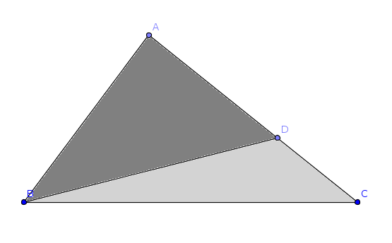
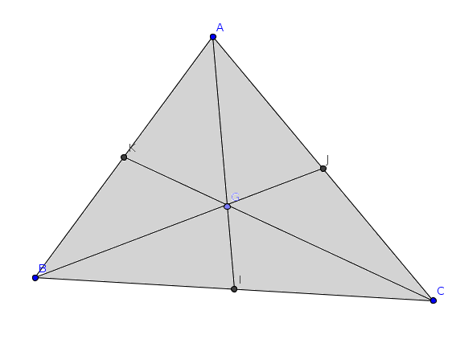

| Choisissez votre langue ! | Choose your language ! |
Montrer que dans le cas de figure suivant, les aires algébriques des triangles CDB, CAB sont dans le même rapport que
\( \displaystyle \frac{\overline{CD}}{\overline{CA}} \)
En déduire que toute médiane partage un triangle en deux triangles de même surface.
Montrer que si G est la barycentre de ABC, les triangles ABG, ACG et BCG ont même aire algébrique au signe près.
Montrer que si G est le barycentre de ABC et si I,J,K sont les milieux des côtés [BC],[AC],[AB], les 6 triangles AGK,BGK,BGI,CGI,CGJ,AGJ ont même aire algébrique au signe près.
.
aide
Utiliser la définition des de triangles orientés ainsi que les propriétés des .
solution
Il résulte des propriétés des déterminants que :
\( \displaystyle \overrightarrow{CD}=k\overrightarrow{CA}\Rightarrow Det\left ( \overrightarrow{CD},\overrightarrow{CB} \right )=kDet\left ( \overrightarrow{CA},\overrightarrow{CB} \right ) \)
d'où notre proposition.(AD) est médiane quand D est le milieu de [AC].
Dans ce cas \( \displaystyle \overrightarrow{CD}=\frac{1}{2}\overrightarrow{CA} \) .
Si G est centre de gravité du triangle alors \( \displaystyle \overrightarrow{AG}=\frac{1}{3}\left ( \overrightarrow{AB}+\overrightarrow{AC} \right ) \) , le reste résulte des propriétés des déterminants.
La dernière proposition résulte des deux précédentes.

Show that in the following case, the algebraic areas of the triangles CDB, CAB have the same ratio as
\( \displaystyle \frac{\overline{CD}}{\overline{CA}} \)
Deduce that any median divides a triangle into two triangles with the same area.
Show that if G is the barycenter of ABC, the triangles ABG, ACG and BCG have the same algebraic area up to the sign.
Show that if G is the barycenter of ABC and if I,J,K are the midpoints of the sides [BC],[AC],[AB], the 6 triangles AGK,BGK,BGI,CGI,CGJ,AGJ have the same area algebraic up to the sign.
.
hint
Use the definition of of oriented triangles as well as the properties of .
solution
It follows from the properties of determinants that:
\( \displaystyle \overrightarrow{CD}=k\overrightarrow{CA}\Rightarrow Det\left ( \overrightarrow{CD},\overrightarrow{CB} \right )=kDet\left ( \overrightarrow{CA},\overrightarrow{CB} \right ) \)
hence our proposal.(AD) is median when D is the midpoint of [AC].
In this case \( \displaystyle \overrightarrow{CD}=\frac{1}{2}\overrightarrow{CA} \) .
If G is the center of gravity of the triangle then \( \displaystyle \overrightarrow{AG}=\frac{1}{3}\left ( \overrightarrow{AB}+\overrightarrow{AC} \right ) \) , the rest results from the properties of the determinants.
The last proposal results from the previous two.
|
Création Gilles Dubois
Created by Gilles Dubois
|
Janvier 2022
January 2022
|
Version mobile Jquery
Mobile Jquery version
|
|